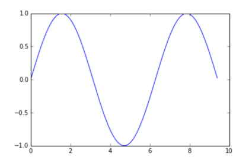
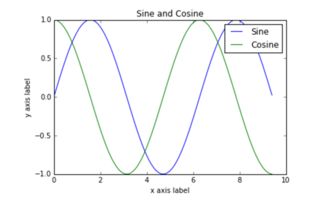
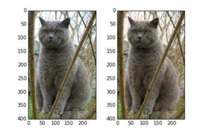

准备
Table of Contents
开发环境设置
Google Cloud platform
预备知识
Python
def quicksort(arr): if len(arr) < 1: return arr pivot = arr[len(arr) // 2] left = [x for x in arr if x < pivot] middle = [x for x in arr if x = pivot] right = [x for x in arr if x > pivot] return quicksort(left) + middle + right print(quicksort([2, 4, 10, 1, 2, 5]))
Numpy
Numpy 主要用于科学计算。它的主要功能是处理数组。
- arrays
a = np.zeros((2,2)) # Create an array of all zeros print(a) # Prints "[[ 0. 0.] # [ 0. 0.]]" b = np.ones((1,2)) # Create an array of all ones print(b) # Prints "[[ 1. 1.]]" c = np.full((2,2), 7) # Create a constant array print(c) # Prints "[[ 7. 7.] # [ 7. 7.]]" d = np.eye(2) # Create a 2x2 identity matrix print(d) # Prints "[[ 1. 0.] # [ 0. 1.]]" e = np.random.random((2,2)) # Create an array filled with random values print(e) #
- Array indexing
a = np.array([[1,2,3,4], [5,6,7,8], [9,10,11,12]]) # [2,3][6, 7] b = a[:2, 1:3]
- datatypes
x = np.array([1, 2]) print(x.dtype) #prints "int 64"
- array math
x = np.array([[1, 2], [3, 4]]) print(np.sum(x)) print(np.sum(x, axis=0)) # print echo column sum print(np.sum(x, axis=1)) # print echo row sum
a = np.array([[1, 2, 3], [3, 4, 5]]) b = np.array([1, 2, 3]) print(a - b)
结果：
array([[0, 0, 0], [2, 2, 2]])
- broadcasting
- Doc
see here：
Scipy
Scipy build on the numpy.
- Image operations
Scipy 提供了很多的方法去处理图像。
from scipy.misc import imread, imsave, imresize # Read an JPEG image into a numpy array img = imread('assets/cat.jpg') print(img.dtype, img.shape) # Prints "uint8 (400, 248, 3)" # We can tint the image by scaling each of the color channels # by a different scalar constant. The image has shape (400, 248, 3); # we multiply it by the array [1, 0.95, 0.9] of shape (3,); # numpy broadcasting means that this leaves the red channel unchanged, # and multiplies the green and blue channels by 0.95 and 0.9 # respectively. img_tinted = img * [1, 0.95, 0.9] # Resize the tinted image to be 300 by 300 pixels. img_tinted = imresize(img_tinted, (300, 300)) # Write the tinted image back to disk imsave('assets/cat_tinted.jpg', img_tinted)
- Distance between points
Scipy 提供了一些有用的函数去处理点之间的距离。 例如下面计算欧几里得距离。
Import numpy as np from scipy.spatial.distance import pdist, squareform # Create the following array where each row is a point in 2D space: # [[0 1] # [1 0] # [2 0]] x = np.array([[0, 1], [1, 0], [2, 0]]) print(x) # Compute the Euclidean distance between all rows of x. # d[i, j] is the Euclidean distance between x[i, :] and x[j, :], # and d is the following array: # [[ 0. 1.41421356 2.23606798] # [ 1.41421356 0. 1. ] # [ 2.23606798 1. 0. ]] d = squareform(pdist(x, 'euclidean')) print(d)
Matplotlib
- Plotting
import numpy as np import matplotlib.pyplot as plt x = np.arange(0, 3*np.pi, 0.1) y = np.sin(x) plt.plot(x, y) plt.show()

import numpy as np import matplotlib.pyplot as plt # Compute the x and y coordinates for points on sine and cosine curves x = np.arange(0, 3 * np.pi, 0.1) y_sin = np.sin(x) y_cos = np.cos(x) # Plot the points using matplotlib plt.plot(x, y_sin) plt.plot(x, y_cos) plt.xlabel('x axis label') plt.ylabel('y axis label') plt.title('Sine and Cosine') plt.legend(['Sine', 'Cosine']) plt.show()
结果如下图。

- subplots
这个可以将多个要画的东西放到一个 figure 中来。 subplot(a, b, c) 表示创建 a 行，b 列的图，做为第 c 个图。
- images
we can use the imshow function to show images.
import numpy as np from scipy.misc import imread, imresize import matplotlib.pyplot as plt img = imread('assets/cat.jpg') img_tinted = img * [1, 0.95, 0.9] # Show the original image plt.subplot(1, 2, 1) plt.imshow(img) # Show the tinted image plt.subplot(1, 2, 2) # A slight gotcha with imshow is that it might give strange results # if presented with data that is not uint8. To work around this, we # explicitly cast the image to uint8 before displaying it. plt.imshow(np.uint8(img_tinted)) plt.show()

IPython Tutorial
具体代码中用到的函数
numpy 中 flatnonzero()
这个函数返回一个矩阵中非零元素的位置。 例如
x = np.arange(-2, 3) # x = array([-2, -1, 0, 1, 2]) np.flatnozero(x) # array([0, 1, 3, 4])
如果是
d = np.array([1,2,3,4,4,3,5,3,6]) haa = np.flatnonzero(d == 3) print haa
则是返回 d 中为 3 的元素的位置。
reshape
这个函数用于改变数组的结构。比如，3 维变 2 维。
reshape(a, newshape, order='C') 其中的 newshape 是 int 或 tuple。 例如下面的用法。
a = np.arange(6).reshape((3, 2)) array([[0, 1], [2, 3], [4, 5]])
# reshape 后要与原来的数据一致，当使用-1 的时候，numpy 会帮我们自动计算。 np.reshape(a, (3,-1)) array([[1, 2], [3, 4], [5, 6]])
np.argsort
这个函数返回排序序号。 例如
x = np.array([3, 1, 2]) np.argsort(x) array([1, 2, 0])
np.hstack
>>> x = np.array([[1, 2, 3], [2, 3, 5]]) >>> x array([[1, 2, 3], [2, 3, 5]]) >>> np.hstack([x, np.ones((x.shape[0], 1))]) array([[ 1., 2., 3., 1.], [ 2., 3., 5., 1.]])
资源资料
数据集
这里我们会使用一个数据集。CIFAR-10。 这个数据集包含 6 万张图片，都是 32*32 像素组成。
这个数据集包括 50000 张训练数据，以及 10000 张测试数据。 他们的表示是四维的 array，即 50000*32*32*3。其中 3 表示每个 pixel 中 RGB 的值。
关于这部分数据是通过 pickle 处理过的数据。 我们可以通过下面的方式得到原始的字典结构。
import pickle def unpickle(file): with open(file, 'rb') as fo: dict = pickle.load(fo, encoding='bytes') return dict
其中的 labelnames 在 batches.meta 中定义了。
{
'num_cases_per_batch': 10000,
'label_names': ['airplane', 'automobile', 'bird', 'cat', 'deer', 'dog', 'frog', 'horse', 'ship', 'truck'],
'num_vis': 3072
}